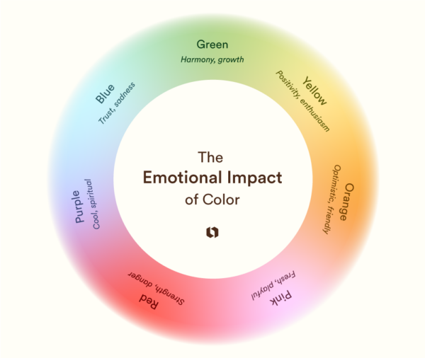
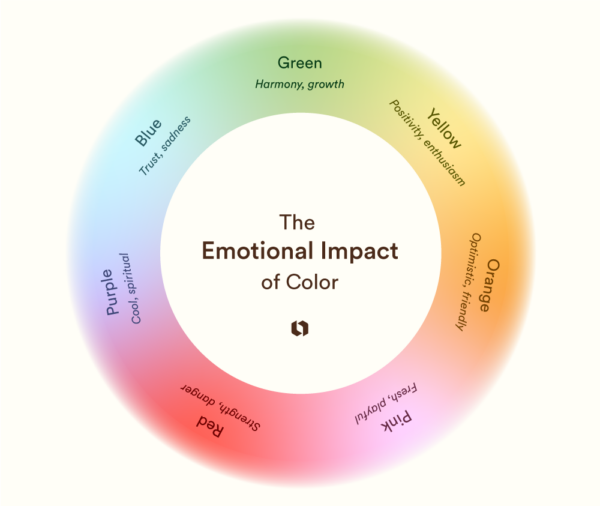

Colors play an important role in how people feel and react to the world around them. Different colors can trigger emotional responses without us even realizing it. For example, warm colors often create feelings of excitement or energy. Cool colors, on the other hand, tend to feel calm and relaxing.
Many industries use color psychology to influence behavior and decision making. Marketing and advertising often rely on color to attract attention and create brand identity. Interior designers use colors to make spaces feel larger, warmer, or more peaceful. Understanding how colors affect emotions can help people make better design choices.
 

| Color | Emotional Response |
|---|---|
| Red | Passion, energy, danger |
| Blue | Calm, trust, sadness |
| Yellow | Happiness, optimism, caution |
| Green | Nature, growth, tranquility |
| Purple | Luxury, creativity, mystery |